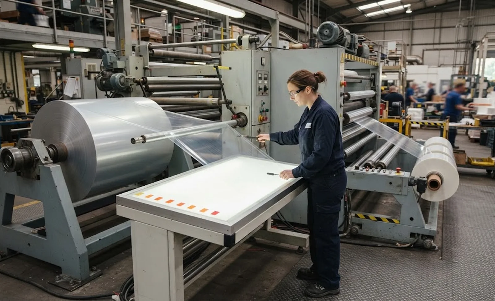
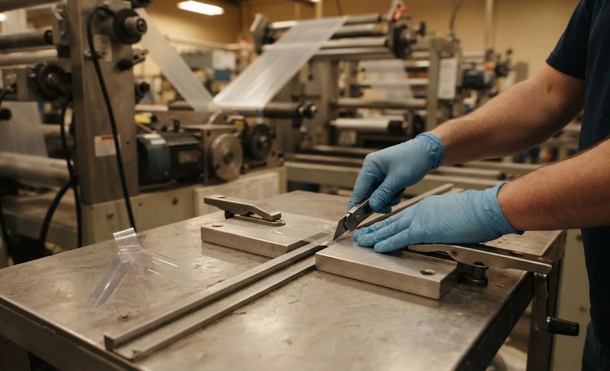

Published October 6, 2026 | By HDPTH Technical Editorial Team

Every converting plant produces rolls it cannot sell: a hole, a streak, a mis-slit band found after the fact. The traditional answers are expensive — scrap the roll, sell it downgrade, or stop the main slitter while an operator re-winds it by hand. A doctoring rewinder replaces all three: it re-runs the roll at controlled speed, removes defects with a clean splice, re-slits if the width needs changing, and hands back a roll with a documented history. For film, labelstock and specialty web plants, it is often the highest-utilisation machine in the hall.
What the machine must actually do
Doctoring is a cycle; the specification should describe the cycle, not the components:
- Run: re-wind at production speed with stable tension from a braked or driven unwind — incoming rolls are often damaged or starred.
- Slow on demand: decelerate to splice-out speed when a defect arrives — operator foot switch or a flag from an inspection system with a defect map.
- Cut and splice: a splice table or a clean hand-cut plus the machine’s ability to hold, clamp and restart — see our splice table guide for the automated version.
- Accelerate and repeat: dozens of times per roll, without wrecking the tension profile of the rebuilt roll.
The invisible spec is how well the machine protects roll quality through the cycle: every splice is a hard spot, and the tension system must rebuild the roll so downstream users never feel it — where centre or centre-surface torque control earns its place.
Speed: the number nobody should quote first
Buyers compare maximum web speed, but doctoring economics live in three other numbers. Ask for them in the offer:
| Number | What it decides | What good looks like |
|---|---|---|
| Acceleration / deceleration rate | Speed of return from splice-out to run speed | Stated in m/s², demonstrated at FAT with your roll |
| Minimum splice-out speed | How far it must slow before splicing | High enough that ten splices per roll is routine, not a shift |
| Splice-out cycle time | Total time from flag to back at speed | Under 30 seconds with a trained operator, verified in the trial |
| Splices per roll capability | Whether heavy salvage rolls stay wound | Stated number, roll quality guaranteed after it |
A machine that answers these four lines can do salvage work all shift. A machine quoted only on top speed is a slitter wearing a doctoring nameplate.

Re-inspection: eyes on the web, records on the roll
Doctoring doubles as a second chance at quality control. Plan the viewing station into the purchase: a backlit table, strobe lighting, or a full-width camera system, depending on your web. Two capabilities matter contractually: the machine must position the web to the flagged defect — from an inspection-system defect map or an operator log — without hunting for metres, and it must log the doctoring history so the rebuilt roll carries a record your customer can trust. That log slots into the plant data layer in our data logging and ERP guide.
Configuration and price signals
For salvage work, accessibility beats automation. A shaftless or quick-chuck unwind accepts whatever arrives; an open web path makes splice quality checkable; a single-spindle centre rewind with fast changeover handles the short, varied jobs that dominate doctoring. Expect a purpose-built doctoring rewinder to cost well below your main slitter — and to return its price through avoided scrap alone if quarantine rates sit above roughly five to ten percent of output. The business case is simple: value of roll salvaged per hour, minus operator cost, against writing the roll off.
Drowning in quarantine rolls?
Send HDPTH your defect types, roll sizes and salvage volumes. We configure the doctoring rewinder around the splice-out cycle — and quote the cycle time, not just the top speed.
Submit Your Project InquiryQuestions to put to every vendor
- What is the measured splice-out cycle time on a roll like ours?
- Can the machine accept a defect map from our inspection system and stop at the defect?
- What roll-hardness consistency do you guarantee on a rebuilt roll after twenty splices?
- How is the doctoring history logged and exported per finished roll?
- Will you demonstrate all of it at FAT with seeded defects and a written protocol?
Related reading
Our guides on web break detection, automatic web threading and the FAT checklist cover the surrounding decisions.
Contact HDPTHFrequently asked questions
What does a doctoring rewinder actually do?
It re-runs a finished roll so defects can be removed and the roll rebuilt to saleable quality: the operator or the inspection system flags a defect, the machine slows to splice-out speed, the defective section is cut out and the web is spliced, and the machine rebuilds the roll while logging what was removed. Most doctoring rewinders also re-slit wider stock and give a second look through a re-inspection station — standard equipment where a single parent roll can be worth more than a day of machine time.
Should we buy a doctoring rewinder or rely on inline inspection on the main slitter?
They solve different problems. Inline inspection prevents defects leaving the main line, but every splice it triggers costs the main line speed — and some defects only become visible in good viewing conditions. A doctoring rewinder moves salvage off the main machine: the slitter keeps running at rate while a second machine reworks flagged rolls. If defective rolls exceed roughly five to ten percent of output, or your main line stops several times per shift for defect removal, a dedicated doctoring machine usually pays for itself.
How fast must a doctoring rewinder be?
Counter-intuitively, top speed is not the headline figure — splice-out speed and splice time are. Salvage work is a rhythm of run, slow, cut, splice, accelerate; if the machine must crawl and take forty seconds to re-thread, operators will stop removing small defects and salvage quality collapses. Compare machines on acceleration rates, minimum splice-out speed and splices per roll without roll-quality loss.
Which unwind and rewind configuration suits doctoring work?
Doctoring favours accessibility over automation. A shaftless or quick-chuck unwind handles varied, sometimes damaged incoming rolls; a centre-surface rewind gives the gentle, controllable torque re-wound salvage rolls need; and an open web path with a large viewing station lets operators verify defect removal. Turret rewinders earn their premium only on long runs; for short salvage jobs, single-spindle with fast changeover is the better price-performance choice.
What should the acceptance test at FAT prove for a doctoring machine?
Ask the builder to run a roll with seeded, known defects and measure what matters: time from defect flag to splice complete, splice failure rate over a representative batch, defect-removal accuracy against a marked reference, and the hardness profile of the rebuilt roll versus a freshly wound one. A written acceptance protocol with those four numbers — agreed before the order — separates a doctoring machine from a slow second slitter.
Sources
- AIMCAL (Association of International Metallizers, Coaters and Laminators): web handling and converting technical resources
- ISO 9001: control of nonconforming product — the process doctoring formalises
- TAPPI: roll structure, winding and re-inspection test methods for converting operations
- OSHA: machine guarding requirements for open web paths and splice tables